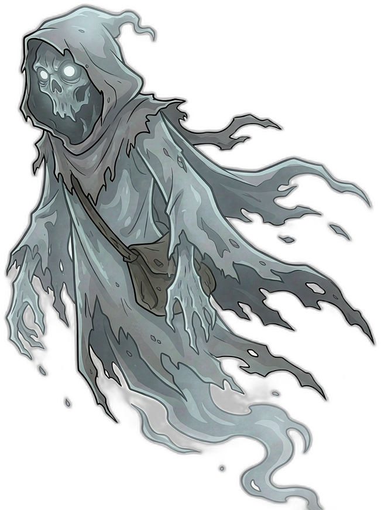

《竖井》动效预览
人物待机动态 · 打击特效 · 受击反应 —— 确认效果后再并入游戏本体（游戏现有 M24 的前冲 / 击退 / 闪红全部保留）
① 待机动态
接地单位以脚底为轴做呼吸挤压（缩放 1.2% / 2.8s，脚部像素不动，身体微起伏）；漂浮单位（拾荒者残影）保留上下浮动，地面影子随起伏反向缩放。各单位相位错开。挂在 img 上，与现有出手 / 受击动画不同层，零冲突。



② 打击全套（出手 → 命中）
掘者前冲（带一道残影）→ 命中瞬间在鼠群身上爆出：斩击弧光 + 冲击环 + 碎屑 + 击退歪头 + 闪红 + 增强飘字。每 3.2s 自动循环。
③ 连击节奏（多段伤害）
双头犬连击三下：小 / 中 / 暴击（金色大字 + 更强的环），展示多段打击的节奏感与暴击的差异。